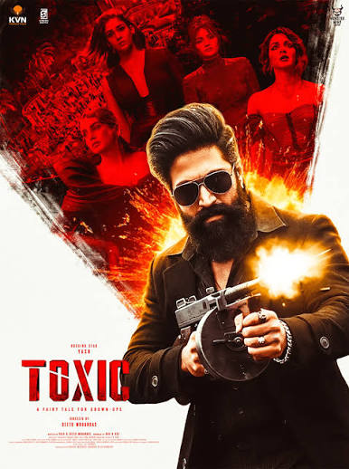

"THE STUDIO HAS FIRED THE BOARD."
Our fictional studio produced five sequels in a row. Critics walked out. Budgets spiralled. Tonight, the chairman handed a $100,000,000 wire transfer to this room.
$100M
CAPITAL ENVELOPE
3 × 3
MULTI-STARRER CAST

CONVENTIONAL WISDOM
THE STUDIO MYTH
- Big Budget ($100M+) = Automatic Box Office
- Prolific Lead Stars = Guaranteed Opening
- Veteran Director = Critical & Financial Safety
- = "A GUARANTEED HIT!"
THE GROUND TRUTH
THE EMPIRICAL REALITY
7,668
MOVIES
41
YEARS
5,436
FINANCIALS
Headline Finding: Budget drives scale (ρ = 0.69) but not return efficiency (ρ = 0.04) or audience ratings (ρ = -0.01).
HOW THE GREENLIGHT MODEL WORKS
AUDIENCE
Choices
SCENARIO
Preset rules
VERDICT
Indicative
Headline Finding: Budget drives scale (ρ = 0.69) but not return efficiency (ρ = 0.04) or audience ratings (ρ = -0.01).
